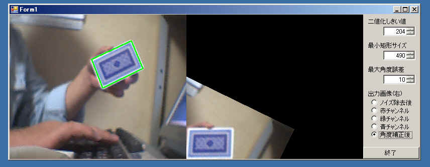

VB(VB2005)によるOpenCV使用のサンプルプログラムの２番目です。
全ソースは下記からダウンロードできます。
OpenCVDemo2.lzh

このサンプルプログラムは
カメラから静止画を取り込み、矩形（長方形）を探し出して表示（緑色）します。
矩形が傾いている場合、その傾きを補正して表示します。
OpenCV付属サンプルの「squares.exe」を拡張したようなサンプルです。
またこのサンプルは画面表示や入力にOpenCVのUIを使用せず
VBの機能を積極的に使用して
静止画取り込みと画像処理部分のみにOpenCVを使用しています。
画像処理としては下記の流れとなります。
①静止画取得
②ノイズを除去
cvPyrDownにて1/2に縮小し、
cvPyrUpにて2倍に拡大することでノイズを除去する。
③RGBの各チャネル毎に下記④～⑧を実行し、
最も大きい矩形を選ぶ。
④二値化
対象とするチャネル(R,G,Bのいずれか)をcvSetImageCOIで選択し、
cvCopyで対象とするチャネルのみ取り出す。
cvThresholdで「二値化しきい値」以下を0、以上を255にする。
⑤輪郭線集出
cvFindContoursで輪郭線リストを取得する。
⑥取得した全ての輪郭線毎に下記⑦～⑧を実行し、
最も大きい矩形を選ぶ。
⑦輪郭線を直線近似
cvApproxPolyで対象輪郭線を直線に近似する。
近似した図形が四角形(辺の数＝４)でなければ対象外とする。
⑧妥当な矩形か？
cvContourAreaで面積を求め、「最小矩形サイズ」より小さい場合は除外する。
cvCheckContourConvexityで、交差しているか凹型の四角形は除外する。
画像の四隅付近に２頂点以上ある場合は除外する。 (画面全体が選択されることを抑止するため)
４点の角度が90度±「最大角度誤差」の範囲でない場合は除外する。（台形や平行四辺形を除外するため）
⑨有効な矩形が見つかった場合、
基準点(回転角度が最も小さくなる左下の角)を選択する。
⑩出力画像が「角度補正後」の場合、
基準点を元に水平となるように回転させた画像を表示する。
（画像の回転にはcvWarpAffineによるアフィン変換を用いる）
以上が大まかな流れです。
すいませんが、詳細についてはコードを参照して下さい^^;